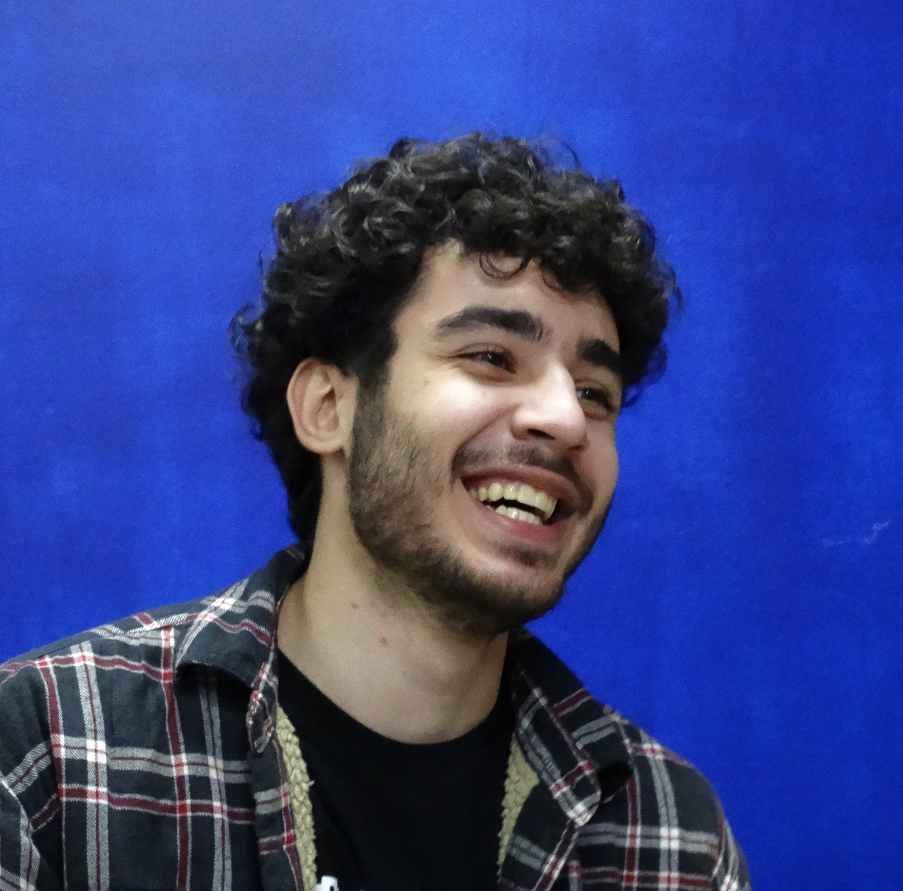

01
Backend engineering
Go services, REST and gRPC APIs, Kafka pipelines, reactive systems, and high-load distributed architectures.
HELLO || I AM
Software Engineer / SRE building reliable backend systems and production infrastructure.

01 / About me
Backend systems, reliability, and the details between them.
I’m a Software Engineer / SRE at Tapsi, one of Iran’s largest ride-hailing platforms. I build event-driven services, improve observability, and work on incident response and failover across datacenters.
Before moving into SRE, I built real-time assignment, notification, and server-driven feed systems. I like making failure modes visible and systems easier to operate.
02 / Services
01
Go services, REST and gRPC APIs, Kafka pipelines, reactive systems, and high-load distributed architectures.
02
Incident response, alerting, observability, root-cause analysis, on-call practices, and disaster recovery.
03
Kubernetes, Istio, Docker, GitOps, Terraform, and the operational foundations behind dependable services.
03 / Portfolio
Production · Tapsi
Backend · Tapsi
Infrastructure · GitHub
04 / Impact
05 / Contact
Let’s talk about backend engineering, platform reliability, or a difficult production problem.